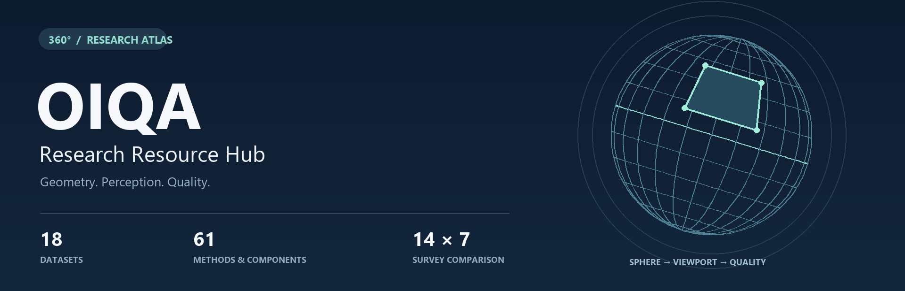
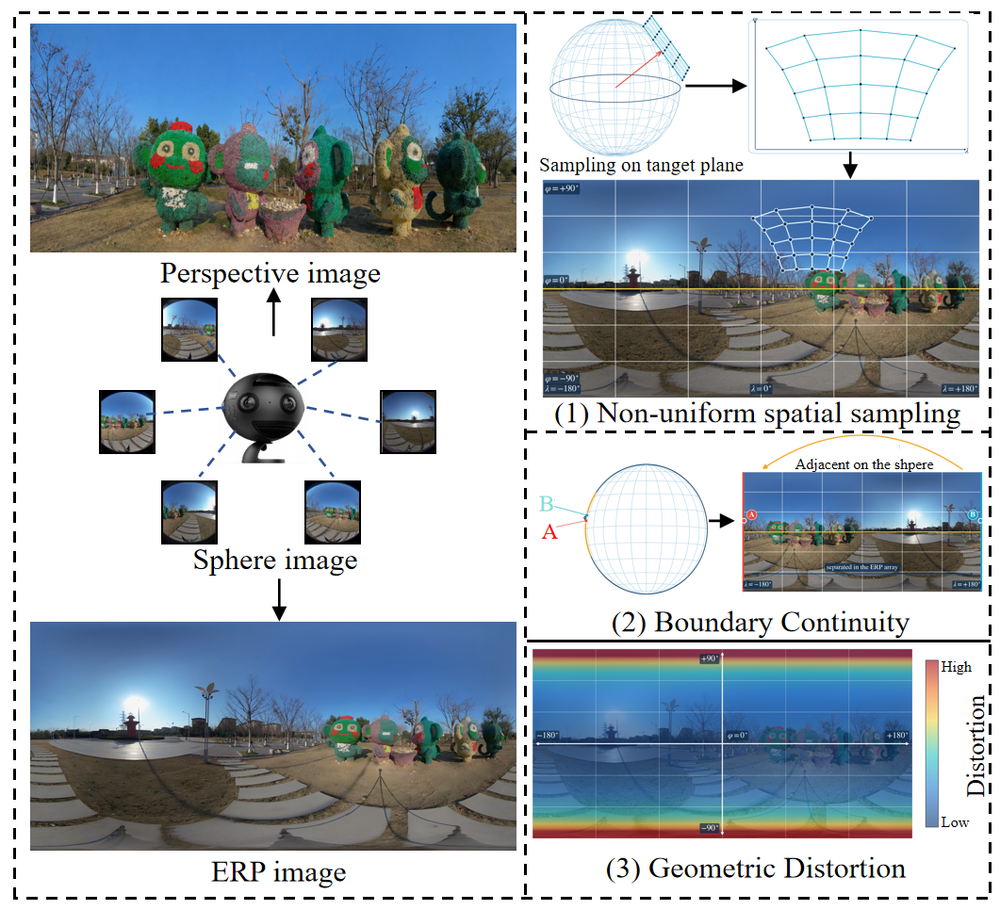
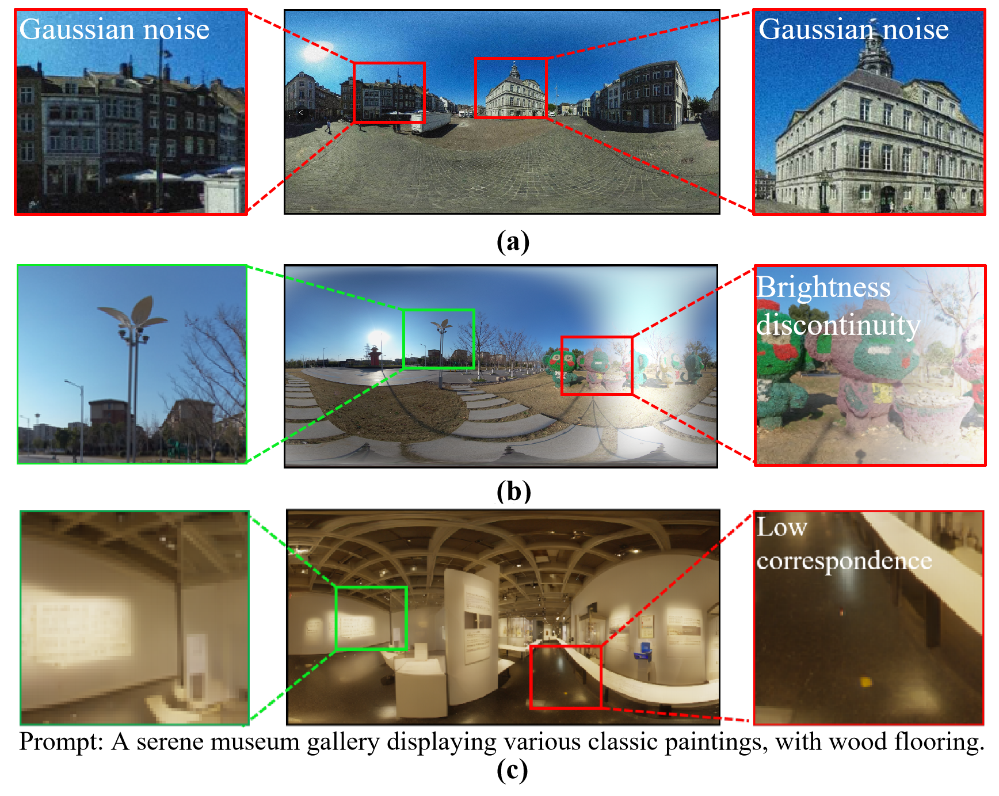
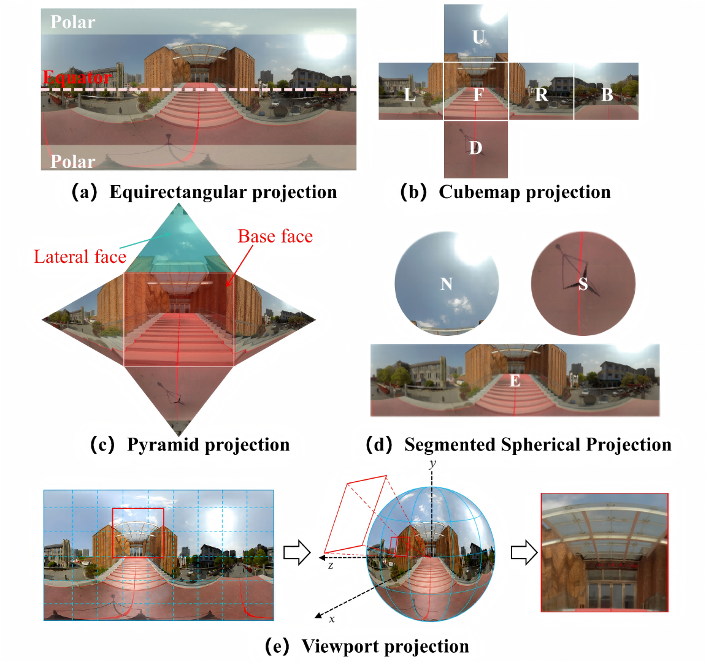
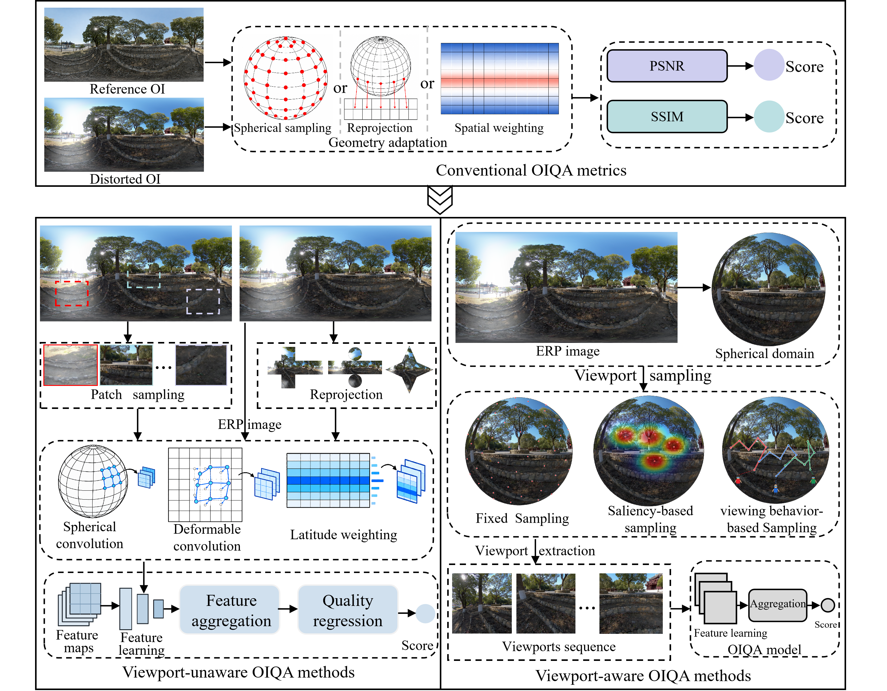

Omnidirectional Image Quality Assessment
Spherical geometry, human viewing behavior, and perceptual quality.
Papers · Datasets · Implementations · Quantitative Comparisons
Overview / Datasets / Methods / Comparison / Citation
A companion resource index for A Survey of Omnidirectional Image Quality Assessment: Challenges, Status, and Future Work. It brings together conventional metrics, viewport-unaware and viewport-aware OIQA methods, and datasets for homogeneous, heterogeneous, and multimodal OIQA.
Authors: Kangcheng Wu · Jiebin Yan · Hanwei Zhu · Jingwen Hou · Yuming Fang
Source pages checked: October 9, 2026 · Dataset access guide · Method details · Sources and verification
Start Exploring
| Research goal | Where to begin |
|---|---|
| Understand what distinguishes OIQA from 2D-IQA | Geometry and distortions → Projection formats → Method taxonomy |
| Select training and evaluation data | Dataset index, with access conditions, annotations, and score conventions in the details |
| Explore public implementations | Assessor360 · OIQAND · IQCaption360 |
| Study viewport-unaware quality modeling | VU-BOIQA · VUGA · GAQC |
| Study viewing behavior and scanpaths | ScanDMM · GSR · RL-ScanIQA |
| Read the survey's quantitative comparison | Results and interpretation · Complete results for 14 methods across 7 databases |
01 / Overview
Omnidirectional images (OIs) represent visual content on a sphere. Their planar projections introduce challenges that distinguish omnidirectional image quality assessment (OIQA) from two-dimensional image quality assessment (2D-IQA): non-uniform spatial sampling, boundary continuity, and geometric distortion. Human viewing behavior further determines which local regions and distortions contribute to perceived quality.

Figure 1. Geometric differences between perspective images and OIs. Select any figure to view its full resolution.

| Challenge | Implication for quality assessment |
|---|---|
| Reference image acquisition | Capturing and stitching an OI can introduce residual degradation, complicating the definition of a pristine reference. |
| Subjective quality assessment | Head-mounted display (HMD) experiments must account for starting points, exploration time, viewing behavior, and fatigue. |
| Objective quality assessment | Models must account for content degradation, projection geometry, and the visual content actually explored by observers. |
Distortions and Perceptual Quality

Figure 2. Homogeneous, heterogeneous, and AIGC-specific distortions motivate different quality assessment settings.

02 / Projection Formats

Figure 3. Five projection formats for the same spherical scene, with different sampling densities, geometric distortions, and spatial coverage.

| Format | Geometric properties | Modeling considerations |
|---|---|---|
| Equirectangular projection (ERP) | Rectangular representation with pronounced polar stretching | Latitude-dependent sampling, geometry-adaptive features, and global context |
| Cubemap projection (CMP) | Six cube faces with reduced geometric distortion | Face boundaries and cross-face feature fusion |
| Segmented spherical projection (SSP) | Separate equatorial and polar regions | Region-specific modeling and spherical coverage |
| Pyramid projection (PYM) | Higher sampling density around a predefined viewing direction | Unequal detail across directions and complementary projections |
| Viewport projection | Perspective projection of a local spherical region | Field of view, viewport coverage, sequential dependencies, and quality aggregation |
03 / Datasets
The following groups use the task names in Table 2 of the survey. Years and image counts follow that table; the dataset access guide adds distortion types, score ranges, maximum resolutions, access codes, and source-specific qualifications.
Access labels: Author release identifies downloads listed by the authors; Request requires a form or contact with the authors; Research mirror identifies a third-party research source. Paper only and Project page indicate the entry currently provided. Links were checked against source pages; complete datasets were not downloaded.
Homogeneous OIQA
| Dataset · year | Scale¹ | Research focus | Access | Resources |
|---|---|---|---|---|
| CVIQ · 2018 | 16 / 528 | Compression distortions | Author release | Download · Project · Paper |
| OIQA · 2018 | 16 / 320 | Blur, noise, and compression | Research mirror | Mirror · Source · Paper |
| MVAQD · 2021 | 15 / 300 | Multiple distortions and visual attention | Email request | Request details · Paper |
| IQA-ODI · 2021 | 120 / 960 | JPEG and projection distortion | Author release | Download · Project · Paper |
| LIVE 3D VR IQA · 2019 | 15 / 450 | Stereoscopic quality and eye tracking | Request form | Request · Project · Paper |
| NBU-HOID · 2021 | 16 / 320 | HDR and tone mapping | Author release | Download · Project · Paper |
| NBU-SOID · 2021 | 12 / 396 | Stereoscopic compression distortions | Author release | Download · Project · Paper |
| SOLID · 2018 | 6 / 276 | Stereoscopic quality and depth perception | Request form | Request · Project · Paper |
Heterogeneous OIQA
| Dataset · year | Scale¹ | Research focus | Access | Resources |
|---|---|---|---|---|
| ISIQA · 2019 | 26 / 264 | Stitching distortion | Download + password request | Download · Project · Paper |
| CROSS · 2019 | 292 / 2044 | Cross-reference stitching quality | Paper only | Paper |
| JUFE · 2022 | 258 / 1032 | Viewing conditions and non-uniform distortions | Author release | Download · Project · Paper |
| OSIQA · 2023 | 300 / 300 | Color, geometric, blur, and ghosting artifacts | Paper only | Paper |
| JUFE-10K · 2024 | 430 / 10320 | Large-scale non-uniform distortions | Author release | Download · Project · Paper |
| OIQ-10K · 2024 | 2500 / 7500 | Mixed distortions and quality captioning | Author release | Download · Project · Paper |
Multimodal OIQA
| Dataset · year | Scale¹ | Research focus | Access | Resources |
|---|---|---|---|---|
| OIQ-10K+ · 2025 | 2500 / 7500 | Images and quality descriptions | Request from authors | Request details · Paper |
| JUFE-10K+ · 2025 | 430 / 10320 | Multimodal quality modeling | Request from authors | Request details · Paper |
| AIGCOIQA2024 · 2024 | - / 300 | AI-generated OIs and text correspondence | Author release | Download · Project · Paper |
| OHF2024 · 2025 | - / 600 | AIGC and distortion-aware saliency | Project page | Project · Paper |
¹ Scale follows the survey's reference / distorted image convention, subject to dataset-specific definitions: ISIQA's 26 denotes source scenes; OSIQA's 300 / 300 comes from 12 raw scenes; OIQ-10K's 2,500 denotes images without perceptible distortion. See the access guide before assuming paired references.
Access instructions and annotations → Dataset details
04 / OIQA Methods

Figure 4. Evolution and taxonomy of OIQA methods, following Section III of the survey.

| Paradigm | Representation and quality modeling |
|---|---|
| Conventional OIQA methods | Adapt 2D-IQA metrics through spherical sampling, reprojection, or spatial weighting. |
| Viewport-unaware OIQA methods | Process ERP patches, reprojected images, or complete ERP images without explicit viewport extraction. |
| Viewport-aware OIQA methods | Extract or generate viewports using fixed sampling, saliency, or human viewing behavior, then aggregate their quality information. |
FR = full-reference · RR = reduced-reference · NR = no-reference · BOIQA = blind OIQA. Component denotes a supporting scanpath or representation model. The tables below index 61 methods and components; reference numbers refer to the survey. Code links point to the recorded implementations; third-party code is labeled explicitly.
Conventional OIQA Methods
Conventional OIQA Methods · 7 entries
| Method / reference | Type | Input representation | Resources |
|---|---|---|---|
| S-PSNR | FR | Spherical sampling | Paper · Third-party code |
| WS-PSNR | FR | ERP with spherical weighting | Paper · Third-party code |
| CPP-PSNR | FR | Craster parabolic projection | Paper · Third-party code |
| NCP-PSNR | FR | Spherical sampling | Paper |
| CP-PSNR | FR | Spherical sampling | Paper |
| S-SSIM | FR | Spherical sampling | Paper · Third-party code |
| WS-SSIM | FR | ERP with spherical weighting | Paper |
Viewport-unaware OIQA Methods
OIQA Methods Based on ERP Patches · 6 entries
| Method / reference | Type | Input representation | Resources |
|---|---|---|---|
| VR IQA NET | NR | ERP patches | Paper |
| DeepVR-IQA | NR | ERP patches | Paper |
| Sendjasni et al. [43] | NR | ERP patches | Paper |
| VU-BOIQA | NR | Adaptive ERP patch sequences | Paper · Code |
| IPSS | FR | ERP patches and patch sequences | Paper |
| Yan et al. [44] | FR | ERP patches | Paper |
OIQA Methods Based on Single-Reprojection Image · 6 entries
| Method / reference | Type | Input representation | Resources |
|---|---|---|---|
| Zheng et al. [35] | NR | Segmented spherical projection | Paper |
| Jiang et al. [10] | NR | Cubemap | Paper |
| Zhou et al. [45] | NR | Cubemap patches | Paper |
| OmiQnet | NR | CMP image | Paper |
| Wang et al. [34] | NR | Cubemap | Paper |
| Liu et al. [46] | NR | CMP image / frequency-domain information | Paper |
OIQA Methods Based on Multi-Reprojection Image · 6 entries
| Method / reference | Type | Input representation | Resources |
|---|---|---|---|
| Jiang et al. [47] | NR | Multiple projection angles | Paper |
| MFAN | NR / FR | Multiple projection formats | Paper |
| Xiao et al. [48] | NR | ERP and CMP | Paper |
| Hu et al. [49] | NR | ERP and alternative projections | Title search |
| Ma et al. [50] | NR | ERP and CMP | Paper |
| Wan et al. [51] | FR | ERP and CMP | Title search |
OIQA Methods Based on Raw ERP Image · 4 entries
| Method / reference | Type | Input representation | Resources |
|---|---|---|---|
| SAP-Net | NR | Raw ERP image | Paper · Code |
| Chen et al. [52] | NR | Raw ERP image | Paper |
| VUGA | NR | Raw ERP image | Paper · Code |
| GAQC | NR | Raw ERP image | Paper · Code |
Viewport-aware OIQA Methods
OIQA Methods With Fixed Viewport Sampling · 10 entries
| Method / reference | Type | Input representation | Resources |
|---|---|---|---|
| MC360IQA | NR | Six fixed viewports | Paper · Code |
| Zhou et al. [65] | NR | CMP face groups with different projection orientations | Paper |
| Liu et al. [66] | NR | Directional viewports | Paper |
| Feng et al. [67] | NR | Uniform spherical viewports | Title search |
| Zhou et al. [68] | NR | Equatorial viewports and ERP | Paper |
| Liu et al. [69] | NR | Sampled viewports | Paper |
| S² | NR | Non-uniform viewports plus global ERP | Paper |
| OIQAND | NR | Equatorial viewports | Paper · Code |
| MTAOIQA | NR | Equatorial viewports | Paper · Code |
| IQCaption360 | NR | Equatorial viewports and ERP | Paper · Code |
OIQA Methods with Saliency-based Viewport Sampling · 4 entries
| Method / reference | Type | Input representation | Resources |
|---|---|---|---|
| VGCN | NR | Saliency-selected viewports | Paper · Code |
| AHGCN | NR | Saliency-selected viewports | Paper · Code |
| Nandhini et al. [74] | NR | Attention-selected viewports | Paper |
| ST360IQ | NR | Saliency-selected tangent viewports | Paper · Code |
OIQA Methods with Human Viewing Behavior Modeling · 15 entries
| Method / reference | Type | Input representation | Resources |
|---|---|---|---|
| Fang22 | NR | Viewports with viewing priors | Paper |
| Sui et al. [76] | NR | Scanpath-derived video frames | Paper |
| Liu et al. [13] | NR | Conditioned viewport sequences | Paper |
| Max360IQ | NR | Recorded scanpath viewports | Paper · Code |
| Zhang et al. [78] | NR | Pseudo-browsing viewport sequences | Paper |
| Zhang et al. [79] | NR | Pseudo-temporal viewport sequences | Paper |
| Sendjasni et al. [80] | NR | Predicted scanpath viewports | Paper |
| PW-360IQA | NR | Perceptual scanpath viewports | Paper |
| Wang et al. [83] | NR | Predicted scanpath viewports | Paper |
| ESPOIQA | NR | Fixation-density viewports | Paper |
| GSR | NR | Gaze-centered tangent patches | Paper · Code |
| Wang et al. [18] | NR | Scanpath viewports | Paper |
| Li et al. [87] | NR | Viewport graph random walks | Paper |
| RL-ScanIQA | NR | Reinforcement-learned scanpaths | Paper · Code |
| Assessor360 | NR | Pseudo-viewport sequences | Paper · Code |
Supporting Components
Supporting Components · 3 entries
| Method / reference | Type | Input representation | Resources |
|---|---|---|---|
| ScanDMM | Component | 360-degree scanpaths | Paper · Code |
| Sun et al. [81] | Component | Scanpaths | Paper |
| X-CLIP | Component | Video-text tokens | Paper · Code |
Full paper titles, modeling details, and model weights → Method details
Viewport Selection and Sequence Generation
| Strategy | Mechanism | Example |
|---|---|---|
| Fixed viewport sampling | Extract viewports at predefined spherical locations | MC360IQA |
| Equatorial sampling | Sample at fixed intervals along the equator, incorporating human viewing priors | OIQAND |
| Saliency-based viewport sampling | Select local regions using visual saliency or attention | VGCN · ST360IQ |
| Recursive probability sampling | Generate multiple pseudo-viewport sequences | Assessor360 |
| Scanpath prediction | Generate successive viewing locations to guide local feature extraction | ScanDMM · GSR |
| Reinforcement-learned exploration | Jointly learn viewport exploration and quality assessment | RL-ScanIQA |
05 / Quantitative Comparison and Analysis
Table 3 of the survey compares 14 methods across 7 databases. The excerpt below highlights three representative databases and computational cost. Complete results report both Spearman's rank-order correlation coefficient (SRCC) and Pearson's linear correlation coefficient (PLCC).
The survey combines published results with supplementary retraining results. These experiments have not been rerun for this repository. Splits and configurations may differ across sources, so the comparison supports analysis of trends rather than a single ranking under a unified evaluation protocol.
| Method | AIGCOIQA2024 SRCC ↑ | JUFE-10K SRCC ↑ | OIQ-10K SRCC ↑ | Params / FLOPs |
|---|---|---|---|---|
| Assessor360 | 0.914 | 0.690 | 0.773 | 88.2 M / 230.5 G |
| OIQAND | 0.896 | 0.800 | 0.740 | 88.0 M / 124.2 G |
| MTAOIQA | 0.456 | 0.821 | 0.824 | 93.0 M / 131.4 G |
| Max360IQ | 0.409 | 0.563 | 0.751 | 6.2 M / 15.1 G |
| VU-BOIQA | 0.888 | 0.782 | 0.766 | 30.2 M / 40.8 G |
| VUGA | 0.913 | 0.846 | 0.830 | 41.2 M / 7.5 G |
| GAQC | 0.885 | 0.835 | 0.842 | 4.7 M / 1.5 G |
Reproducibility Considerations
- Split by source content. Keep an OI and its distorted versions or viewports within the same partition to avoid data leakage.
- Check score direction. For example, higher IQA-ODI DMOS indicates poorer quality; the label name alone is insufficient.
- Record the input configuration. Include projection format, resolution, field of view, viewport count, starting point, and exploration time.
- Specify the evaluation protocol. Report SRCC, PLCC, random seeds, and statistics across splits. Document the nonlinear mapping used before PLCC; the survey uses a four-parameter logistic function.
- Account for the complete pipeline. State whether FLOPs include reprojection, viewport extraction, and scanpath generation. Report hardware and end-to-end latency alongside model complexity.
06 / Future Work
| Direction | Research question | Experimental opportunities |
|---|---|---|
| Transferable quality representation learning | How can general content and distortion representations from 2D-IQA adapt to OI-specific geometry? | 2D-IQA pretraining, cross-database transfer, and cross-distortion generalization |
| Active viewing behavior modeling | Can a model select the next viewport using accumulated quality evidence and stop when sufficient information is available? | Adaptive exploration, different viewing budgets, and quality–efficiency trade-offs |
| Spatially grounded quality understanding | Can quality scores be supported by localized distortions and consistent textual explanations? | Region-level evidence, distortion type and severity, and explanation–score consistency |
07 / Maintenance and Contributions
Contributions can add author repositories, dataset access pages, model weights, or corrections. Include the resource name, original paper, authoritative source, and access conditions. Identify third-party implementations and mirrors. See CONTRIBUTING.md.
Terminology, category headings, and reference numbers follow the supplied survey manuscript. Publication-year or representation differences are documented in the details. See Sources and verification for the scope of resource checks.
Related resources: Awesome Image Quality Assessment · OIQA-FR-Metrics · OpenVRQoE
Citation and Acknowledgments
Kangcheng Wu, Jiebin Yan, Hanwei Zhu, Jingwen Hou, and Yuming Fang. A Survey of Omnidirectional Image Quality Assessment: Challenges, Status, and Future Work.
Survey repository: KangchengWu/IEEE-OIQA-Survey. Please also cite the original papers when using their datasets, implementations, or experimental results.
BibTeX · Survey manuscript
@misc{wu_oiqa_survey,
title = {A Survey of Omnidirectional Image Quality Assessment:
Challenges, Status, and Future Work},
author = {Wu, Kangcheng and Yan, Jiebin and Zhu, Hanwei
and Hou, Jingwen and Fang, Yuming},
howpublished = {Survey manuscript},
url = {https://github.com/KangchengWu/IEEE-OIQA-Survey}
}
This entry uses the information available in the supplied manuscript. Use the publisher's citation record when final publication metadata becomes available.
The four research figures are from the survey. Rights and usage conditions for linked papers, datasets, and implementations remain with their respective owners. See Asset attribution.